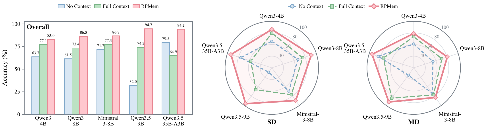
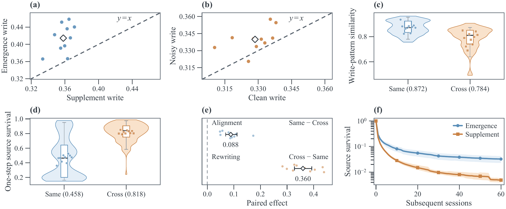

Memory across sessions
Long-running LLM agents need memory that persists and evolves. Text-based memory retrieves and reconstructs past interactions at each query. RPMem instead compiles session information into model computation through low-rank adaptation.
The architecture separates session encoding, recurrent consolidation, and backbone-specific decoding. A frozen context encoder and a trainable Perceiver compile each bounded session into fixed-shape latent memory. A task-trained gate integrates new sessions with retained memory, and a decoder maps the consolidated state to LoRA parameters.
This separation supports decoder-head adaptation when the backbone changes. The paper studies long-term memory on PERMA, PersonaMem-v2, and PrefEval, alongside cross-backbone transfer and memory dynamics.
Two stages, one persistent memory
Session compilation
The compiler learns from a history-aware teacher using a fixed-reference forward-KL objective. The reader and context encoder stay frozen while the Perceiver and LoRA decoder are trained.
Recurrent consolidation
Downstream supervision trains a lightweight gate to retain and update session memory. At deployment, bounded sessions update a fixed-size state without reprocessing the entire history.
Cross-session memory performance
RPMem achieves the strongest non-oracle aggregate results on PERMA and PersonaMem-v2. On PrefEval, LightMem leads at shorter intervals; RPMem leads at 300 intervening turns.
Accuracy (%), as reported in the paper. Qwen3-8B with thinking disabled for RPMem and baseline implementations, except the released Metis-9B model. Bold values mark the best non-oracle result in each column; Gold State is an oracle reference. Shading identifies RPMem.
PERMA
| Method | SD-C | SD-N | MD-C | MD-N | Core |
|---|---|---|---|---|---|
| No Context | 66.73 | 66.73 | 54.60 | 54.60 | 60.66 |
| Gold State (oracle) | 72.70 | 72.23 | 66.06 | 65.47 | 69.12 |
| Rolling Summary | 39.57 | 40.27 | 23.34 | 27.41 | 32.65 |
| LightMem | 56.63 | 56.20 | 40.72 | 40.20 | 48.44 |
| Mem0 | 57.57 | 58.57 | 41.03 | 42.10 | 49.82 |
| RAG (BGE-M3) | 63.00 | 62.53 | 49.16 | 47.46 | 55.54 |
| Full Context | 76.47 | 73.03 | 70.72 | 69.95 | 72.54 |
| SFT | 78.00 | 71.47 | 49.30 | 42.61 | 60.35 |
| Metis-9B | 80.87 | 80.47 | 80.17 | 79.29 | 80.20 |
| RPMem (ours) | 90.57 | 91.20 | 79.67 | 80.62 | 85.52 |
PersonaMem-v2
| Method | Overall | Self | Current |
|---|---|---|---|
| No Context | 25.74 | 25.28 | 25.42 |
| Gold State (oracle) | 57.90 | 64.05 | 69.16 |
| Rolling Summary | 26.58 | 25.46 | 25.32 |
| LightMem | 30.46 | 31.42 | 34.51 |
| Mem0 | 30.02 | 30.26 | 31.90 |
| RAG (BGE-M3) | 30.32 | 31.13 | 31.70 |
| Full Context | 31.10 | 32.72 | 33.97 |
| SFT | 31.64 | 33.65 | 35.47 |
| Metis-9B | 29.64 | 30.24 | 31.32 |
| RPMem (ours) | 40.22 | 43.61 | 47.28 |
PrefEval
| Method | 10 turns | 70 turns | 300 turns |
|---|---|---|---|
| No Context | 36.67 | 39.82 | 39.07 |
| Gold State (oracle) | 80.18 | 80.74 | 80.00 |
| Rolling Summary | 44.26 | 45.19 | 45.19 |
| LightMem | 81.30 | 79.07 | 73.52 |
| Mem0 | 73.15 | 65.19 | 61.67 |
| RAG (BGE-M3) | 59.26 | 54.63 | 50.74 |
| Full Context | 60.00 | 45.00 | 40.56 |
| SFT | 57.22 | 40.00 | 38.15 |
| Metis-9B | 43.89 | 39.07 | 39.82 |
| RPMem (ours) | 69.81 | 72.41 | 74.81 |
Across language-model backbones
The paper evaluates five backbones across model families, scales, and dense and MoE architectures. RPMem consistently improves over matched No Context and Full Context references.


What makes memory work?
Both training stages matter. Matching the context-conditioned distribution produces stronger session memories, while learned consolidation substantially outperforms fixed rules for combining them.
PERMA accuracy (%). Core SD and Core MD average the clean and noisy settings; Core Avg. averages all four. Each ablation varies one stage while holding the other fixed.
Memory compilation
| Objective | Core SD | Core MD | Core Avg. |
|---|---|---|---|
| Compiler SFT | 72.20 | 50.23 | 61.21 |
| Sampled RKL (top-K) | 74.08 | 59.73 | 66.91 |
| Sampled RKL (K3) | 70.82 | 63.22 | 67.02 |
| Top-K CE | 82.99 | 72.34 | 77.66 |
| Sampled FKL | 88.37 | 79.14 | 83.75 |
| Fixed FKL | 90.89 | 80.15 | 85.52 |
Fixed FKL improves over Top-K CE by 7.86 percentage points, supporting distributional matching beyond selected-token probabilities.
Cross-session consolidation
| Rule | Core SD | Core MD | Core Avg. |
|---|---|---|---|
| Rank concatenation | 14.97 | 12.71 | 13.84 |
| Latent averaging | 62.40 | 28.64 | 45.52 |
| Latest Session | 67.72 | 39.40 | 53.56 |
| Factor averaging | 69.44 | 38.99 | 54.21 |
| Learned gate (ours) | 90.89 | 80.15 | 85.52 |
The learned gate gains 31.31 percentage points over factor averaging, the strongest fixed rule evaluated here.
More sessions, fixed-size memory
At 64 accumulated sessions, RPMem updates memory in 0.043 seconds and retains 36.562 MiB per user. The reader receives no historical context tokens. Update time and retained state stay nearly constant across the measured history lengths.
| Method | Memory update | Persistent memory | Historical query tokens | ||
|---|---|---|---|---|---|
| Time (s) | Growth | Size (MiB) | Growth | ||
| Full Context | — | — | 0.138 | 78.09× | 28,498.4 |
| Mem0 | 12.554 | 1.10× | 20.041 | 62.11× | 441.7 |
| Adapter rank concatenation | 0.948 | 29.46× | 183.738 | 5.10× | 0 |
| RPMem (ours) | 0.043 | 1.03× | 36.562 | 1.00× | 0 |
Hot-update timings with models and services already resident. Persistent memory excludes shared model parameters. Full Context has no separate write operation. Here, rank concatenation recompiles accumulated history at each update; the consolidation ablation above instead uses session-wise adapters.
What does the gate keep?
The gate writes and retains information differently according to its role in the history. Events that establish a new memory domain receive stronger writes than supplements; later updates revise same-domain information while preserving more of other domains.


The emergence-to-supplement survival ratio grows from 1.31× after one update to 6.64× after 60. This traces the retained contribution of a session to the latent state, not a probability of answering correctly.
Citation
@article{zhao2026rpmem,
title={RPMem: Learning Long-Term Recurrent Parametric Memory Across Sessions for LLM Agents},
author={Zhao, Fanyu and Cao, Ruike and Dong, Liang and Yao, Fugen and Xu, Jian and
Jiang, Guanjun and Zhang, Han and Zhao, Yifei and Li, Yinsheng},
journal={arXiv preprint arXiv:2609.23466},
year={2026},
url={https://arxiv.org/abs/2609.23466}
}Acknowledgements
This work was supported by Qwen Business Unit through Alibaba Research Intern Program.
We thank the authors of Doc-to-LoRA (D2L), Idefics2, PERMA, PersonaMem-v2, and PrefEval for their open-source work.